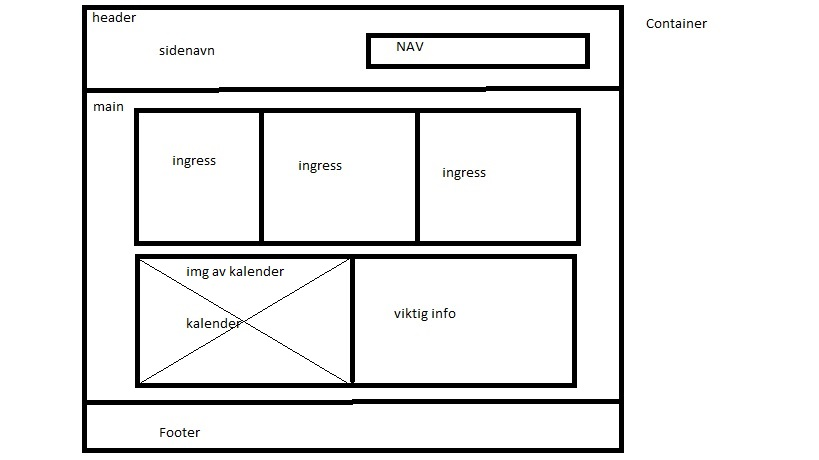
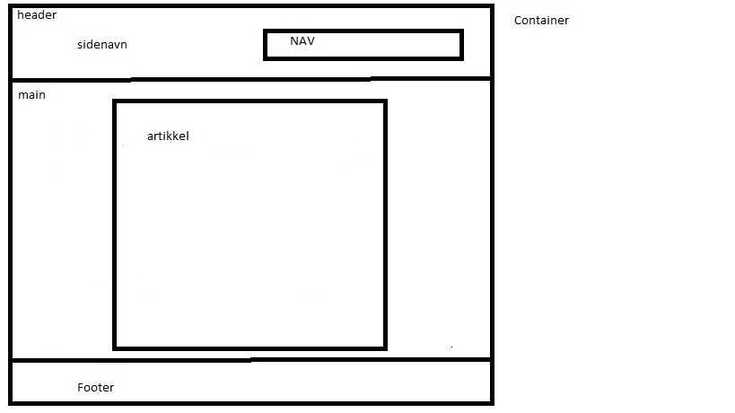

Jeg bestemte meg for å bruke inline-block siden det er det jeg var mest kjent med. Ved hjelp av inline-block så står divene mine ved siden av hverandre. Jeg tenkte at det var mest oversikkelig å ha divene ved siden hverandre.
For artikkelstylen brukte jeg omtrent samme kode som forsidestylen, en endring var å t bort et par styles for classes som ikke ble brukt, og la til en style for en ny id
| Beskrivelse | URL |
|---|---|
| Google, søkemotoren jeg ofte bruker | |
| Facebook, sosial media |